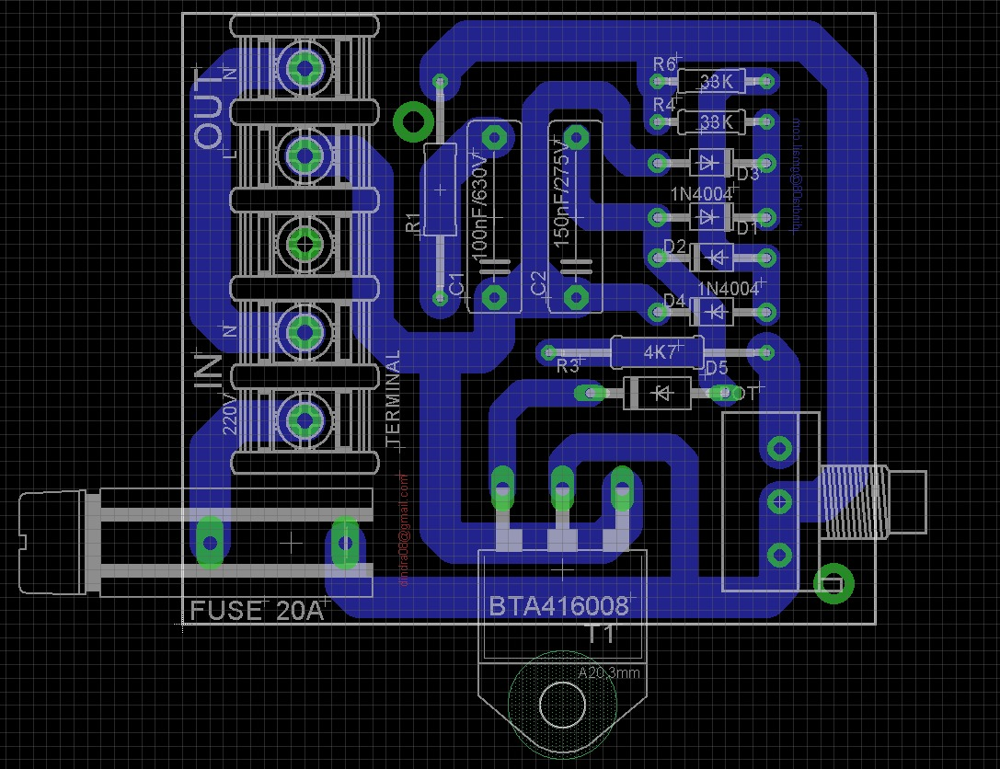

Rangkaian Dimmer
Pengertian Rangkaian Dimmer
Dimmer adalah pengatur nyala lampu sederhana dimana pengguna / user bisa mengatur intensitas cahaya yang dikeluarkan oleh sebuah lampu.
Alat Dan Bahan
1. PCB
2. 4X Dioda 1N4004
3. 2X Resistor 4K7
4. 2X Resistor 33K
5. Dioda 1N54003
6. BTA416008 TRIAC
7. Fuse 20A
8. Potensio 50K Ohm
9. Kapasitor ( 100nF/630V)
10. Kapasitor (150nF/275v)
11. Terminal 5205-05-N-2 5 pin
Video Tes Project